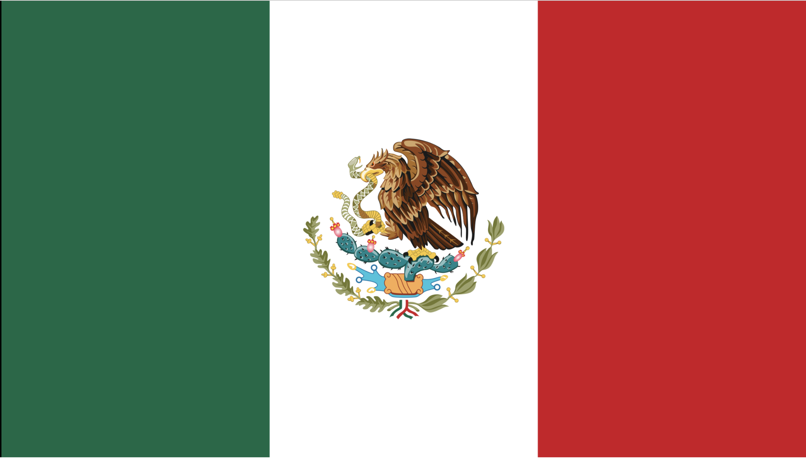

Travel to Mexico
Half of Mexico was bought by the United States of america

Fact center
- In Mexico they celebrate in the end of October and it is called as El Dia de los Muertos, or Day of the Dead.
- El Dia de los Muertos, or Day of the Dead. Is where they celebrate their ancestor
- Mexico is located in North America bellow the United States of America
- The tadional dance is called as Jarabe. The Jarabe is considered Mexico's “national dance” and is the best known outside the country, often called the “Mexican Hat Dance” in English.
to know about Mexico click here